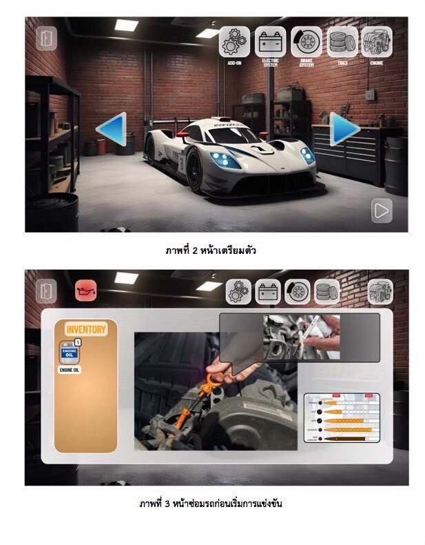
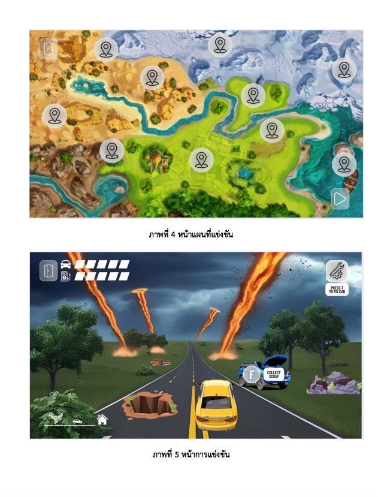
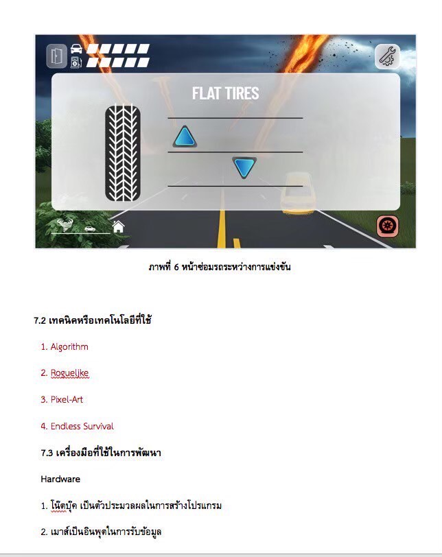
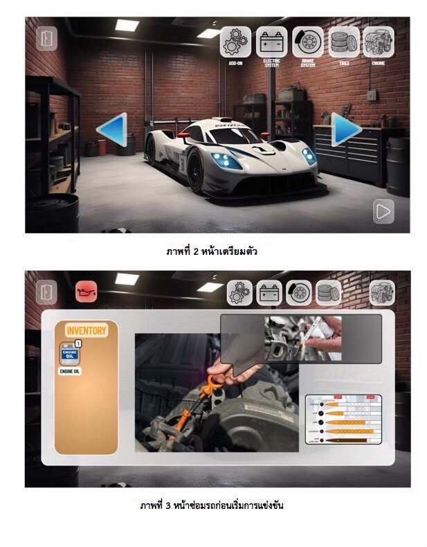
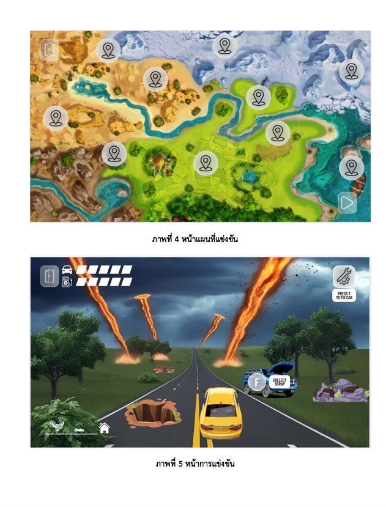
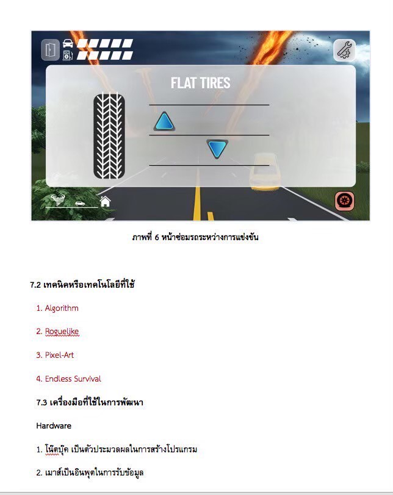
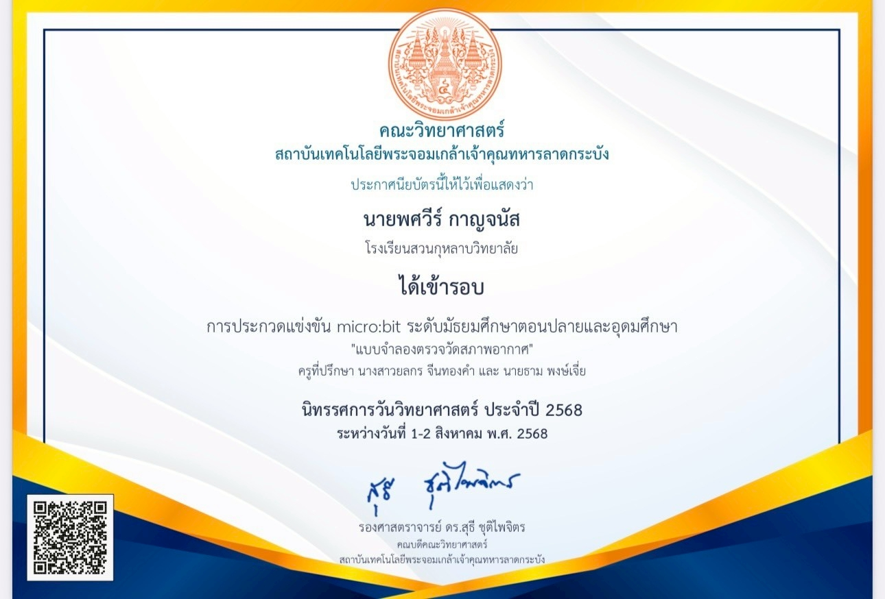
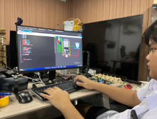
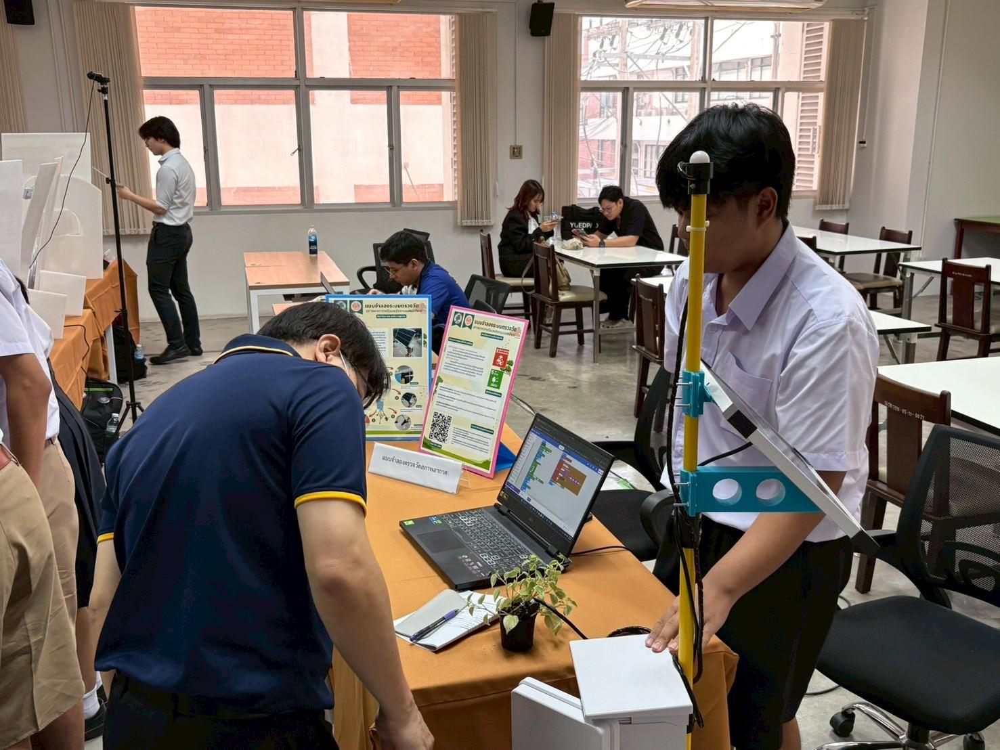

Phodsawee Karnchanat
Science–Math Program @ Suankularb Wittayalai
ตั้งแต่วัยเด็กผมชอบประกอบและต่อยอดสิ่งต่าง ๆ ตั้งแต่ตัวต่อ Beyblade ไปจนถึงแต่งรถ Tamiya จนโตขึ้นสนใจโลกดิจิทัลมากขึ้น เริ่มศึกษาสเปกคอมพิวเตอร์ ลงมือประกอบคอมเอง ติดตั้งระบบปฏิบัติการและซอฟต์แวร์ต่าง ๆ ต่อมามีโอกาสช่วยธุรกิจครอบครัวด้าน Digital Marketing ทั้ง Google Ads, Analytics, Facebook/TikTok Ads และ SEO พร้อมลงมือเชื่อม API ใส่แท็กฝั่ง backend และตั้งค่า conversion tracking จึงต่อยอดสู่การเขียนโปรแกรม HTML, CSS, Java, Python และสนใจทางด้าน Data Engineering กับ Cybersecurity อย่างจริงจัง
Education
Suankularb Wittayalai School – Science–Math
Senior High GPA (4/6): 2.37 • Junior High GPA: 3.25
Chanratwittaya School – Primary
GPA: 3.70
STATEMENT OF PURPOSE
ความสนใจของผมในด้านเทคโนโลยีเริ่มต้นมาตั้งแต่วัยเด็ก จากการประกอบของเล่นประเภทตัวต่อและรถบังคับประสบการณ์เหล่านี้ทำให้ผมได้เรียนรู้การทำงานของกลไกฝึกการสังเกต และปลูกฝังความคิดเชิงวิเคราะห์ เมื่อก้าวเข้าสู่ช่วงมัธยมปลาย ความสนใจดังกล่าวได้ถูกต่อยอดอย่างจริงจังผ่านโลกของเกมออนไลน์ซึ่งเป็นจุดเริ่มต้นที่ทำให้ผมศึกษาคอมพิวเตอร์เชิงลึกมากขึ้น ทั้งในด้านสเปกของเครื่องคอมพิวเตอร์และการประกอบด้วยตนเองประสบการณ์นี้ทำให้ผมได้เรียนรู้ทั้งฮาร์ดแวร์และซอฟต์แวร์ควบคู่กันอย่างมีระบบ
นอกเหนือจากการเรียนรู้ด้วยตนเอง ผมยังได้มีโอกาสช่วยธุรกิจครอบครัวในด้านการตลาดดิจิทัล โดยเริ่มจากการวางแผนโฆษณาออนไลน์ (SEM) บนแพลตฟอร์มอย่าง Google Ads และ Facebook Ads พร้อมทั้งใช้เครื่องมือวิเคราะห์ข้อมูล เช่น Google Analytics และ Google Search Console เพื่อวัดประสิทธิภาพและวิเคราะห์พฤติกรรมผู้ใช้งานประสบการณ์นี้ทำให้ผมตระหนักถึงความสำคัญของการจัดการและวิเคราะห์ข้อมูลอย่างเป็นระบบขณะเดียวกันผมได้เริ่มศึกษาภาษาคอมพิวเตอร์ เช่น HTML, CSS และ Java เพื่อต่อยอดการปรับแต่งเว็บไซต์ด้วยตนเอง และจากการเรียนรู้นี้ ผมสามารถสร้างโครงงาน “แบบจำลองสภาพอากาศ” ซึ่งได้รับคัดเลือกให้นำเสนอในงาน Open House ของมหาวิทยาลัยพระจอมเกล้าลาดกระบังประสบการณ์ดังกล่าวแสดงให้เห็นว่าความรู้จากทั้งในและนอกห้องเรียนสามารถนำไปประยุกต์ใช้และสร้างผลงานที่จับต้องได้จริง
จากการเรียนรู้และประสบการณ์ที่ผ่านมา ผมค้นพบว่าความสนใจของผมไม่ได้จำกัดอยู่ในสาขาใดสาขาหนึ่งแต่ครอบคลุมหลายแขนงของเทคโนโลยีสารสนเทศทั้งCybersecurity,Software Engineering, Data Science และ Internet of Things (IoT) ด้วยเหตุนี้เอง ผมจึงมุ่งมั่นที่จะศึกษาต่อในคณะเทคโนโลยีสารสนเทศและการสื่อสาร(ICT)ซึ่งมีหลักสูตรที่ออกแบบมาเพื่อบูรณาการความรู้ในหลายสาขา และส่งเสริมทั้งการเรียนเชิงทฤษฎีและการลงมือปฏิบัติจริง
แรงบันดาลใจสำคัญที่ผลักดันให้ผมเลือกคณะนี้ คือเป้าหมายในการนำความรู้ด้านการจัดการข้อมูลไปประยุกต์ใช้เพื่อลดความซับซ้อนในกระบวนการทำงานของโรงพยาบาลผมเชื่อว่าการพัฒนาระบบจัดการข้อมูลที่มีประสิทธิภาพจะช่วยให้บุคลากรทางการแพทย์ทำงานได้รวดเร็วขึ้นลดความผิดพลาด และเพิ่มคุณภาพในการให้บริการผู้ป่วยได้อย่างแท้จริง ผมมั่นใจว่าหลักสูตรของคณะ ICT ที่เปิดโอกาสให้นักศึกษาได้คิด วิเคราะห์ และสร้างสรรค์โครงงานด้วยตนเอง จะเป็นรากฐานสำคัญที่ทำให้ผมสามารถพัฒนาโซลูชันที่ตอบโจทย์ความต้องการนี้ได้
เมื่อได้เข้าศึกษา ผมตั้งใจที่จะเพิ่มพูนความรู้และทักษะด้านการเขียนโปรแกรม ควบคู่กับการประยุกต์ใช้ทฤษฎีในการทำโครงงานจริง เพื่อสร้างนวัตกรรมที่สามารถแก้ไขปัญหาและตอบสนองความท้าทายในโลกดิจิทัลได้อย่างแท้จริงหลังจากสำเร็จการศึกษาระดับปริญญาตรี ผมมีเป้าหมายที่จะศึกษาต่อในระดับปริญญาโทเพื่อเจาะลึกในสาขาที่ผมมีความถนัดเป็นพิเศษและเพื่อเตรียมความพร้อมสำหรับการเป็นส่วนหนึ่งในการขับเคลื่อนการเปลี่ยนแปลงเชิงบวกให้กับสังคมด้วยเทคโนโลยี
Skills / ทักษะ
Technical
Soft Skills
Interests
Projects
The 27th National Software Contest (NSC 2025) Game: “เกมส์ ซิ่งท้านรก”
 





Samsung Solve for Tomorrow – Workshop workshop: innovation A fire truck
Projects
THAILAND INNOVATIVE COMPETITION 2025 :งานประกวดนวัตกรรมระดับประเทศ
Science and Technology for Sustainable Development
:
นำเสนอผลงานด้านวิทยาศาสตร์และเทคโนโลยีเพื่อการพัฒนาอย่างยั่งยืน



Activities
Faculty of ICT, Mahidol University AI Vision Camp
เรียนรู้การจำแนกวัตถุด้วยคอมพิวเตอร์วิทัศน์ ฝึกทำงานกลุ่มและการนำเสนอ ผลักดันความสนใจด้าน AI ↔ Cybersecurity
Fun Fundamentals of Python Programming
หลักการเขียนโปรแกรม, โครงสร้างข้อมูลเบื้องต้น, และการแก้ปัญหาเชิงตรรกะ
Faculty of ICT, Mahidol University Mahidol Short Course หัวข้อ “กว่าจะเป็น Software!”
หลักการเขียนโปรแกรม
อบรม no code ai การประยุกต์ใช้ python KMUTT
อบรม no cobe ai การประยุกต์ใช้ python
Programming Robots with Automation (DOBOT)
ฝึกควบคุมหุ่นยนต์เชิงปฏิบัติ การไหลของงานอัตโนมัติ และความปลอดภัยระบบ
โครงการจิตอาสารักษ์โลก
โครงการจิตอาสารักษ์โลก รณรงค์การใช้พลังงานอย่างรู้คุณค่าและลดขยะพลาสติก
Samarnmitr – Art & Technics Club
ติดตั้งระบบแสงระดับคอนเสิร์ต ออกแบบ Backdrop/Wall Painting ทำงานร่วมกับศิลปินระดับประเทศ
SCIENCE WEEK / Robotics Base Staff & Lecturer (2024)
จัดฐานกิจกรรมรถหุ่นยนต์ควบคุมมือถือ สอนและดูแลผู้เข้าร่วม จัดแสงเวทีและอุปกรณ์ไฟฟ้า

OSK141 Final Day – LED Sign & Building Lighting
ทำป้าย LED บนอัฒจันทร์ จัดไฟย้อมสีตึกยาวของโรงเรียน (ชมพู/ฟ้า) และติดตั้งป้าย OSK141
Jaturamitr 30th Lighting & Stage Support
สนับสนุนการติดตั้งระบบแสง/เวที ทำงานร่วมทีมขนาดใหญ่ แบบมืออาชีพ